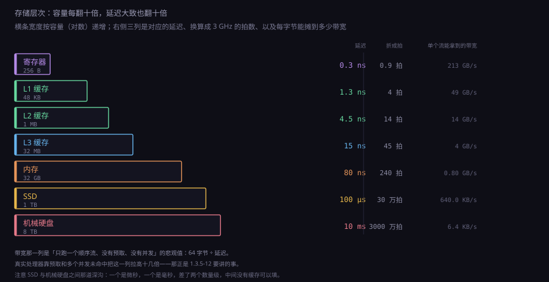
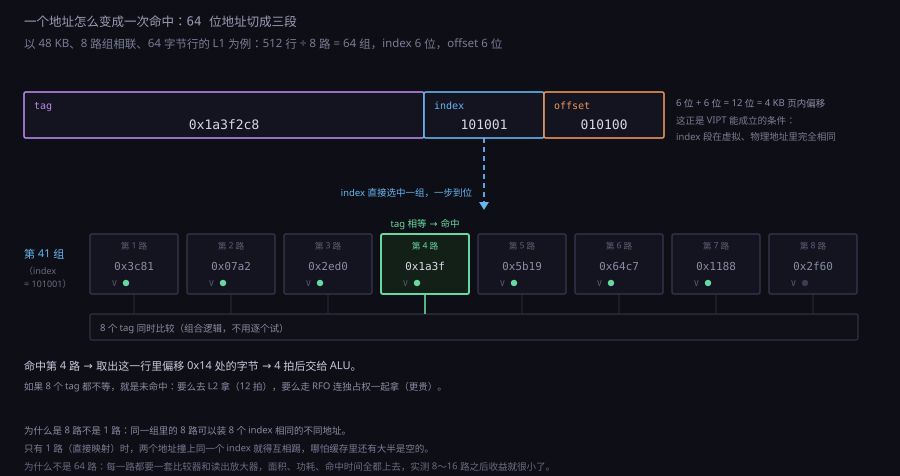
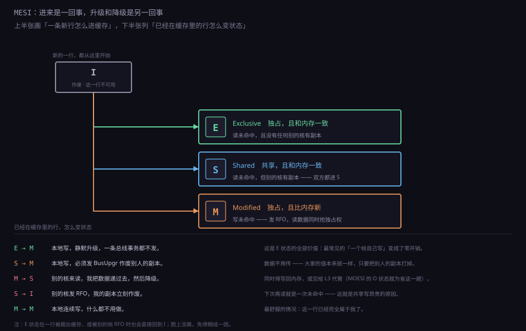
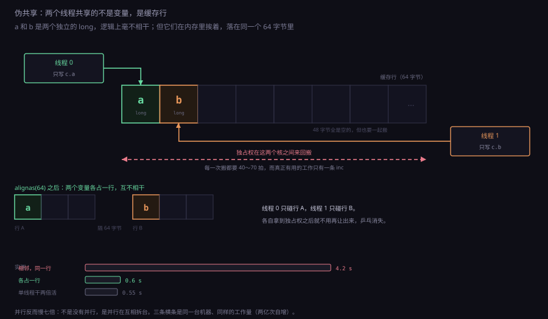
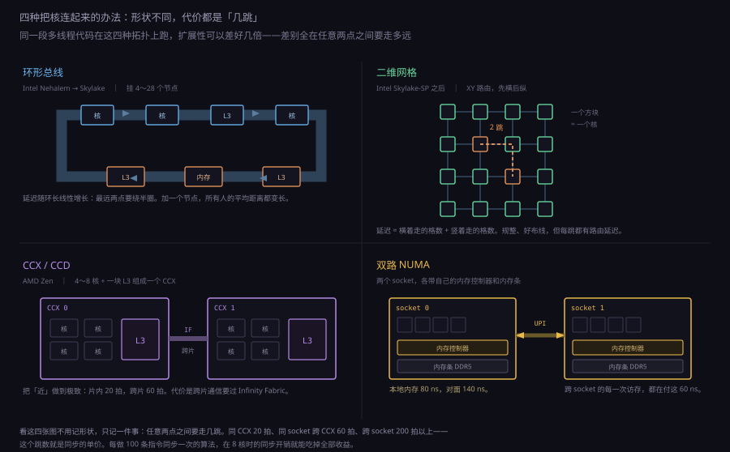
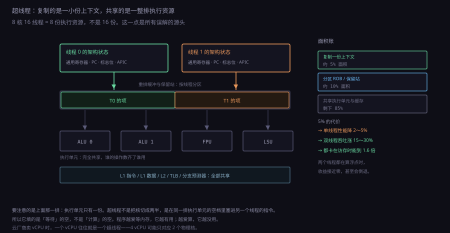

约 1.1 万字 · 6 张图 · 读完你能说清为什么内存访问慢 200 拍还能跑得动、 为什么两个线程各写各的变量会互相拖慢五倍、 并且明白「核心多不等于快」这句话到底卡在哪一层
add 从取指到退休大约 20 拍，一次内存访问要 200 拍。
如果每条指令都真的去内存拿数据，前面所有的流水线、旁路、乱序、预测，
全部白搭——处理器 95% 的时间在等一根内存条。
缓存做的就是把这 200 拍变成 4 拍。
而一旦有了缓存，多核就冒出一个新问题：两块缓存里的同一份数据，
谁说了算。MESI 协议、内存屏障、伪共享、NUMA，
这一整串东西都是从「缓存」这两个字里长出来的。
这一节最后会回答标题里的问题：为什么核心多不等于快。
先算一笔最朴素的账。假设一颗 3 GHz 的处理器，一条 add
走完五级流水要 5 拍，从取指到退休（算上乱序引擎的各种开销）
实际大约 15～20 拍。20 拍在 3 GHz 上是 6.7 纳秒。
而一次真的去内存拿数据、发现缓存里没有，要先读到 L3、
L3 也没有就去内存控制器、内存控制器去 DRAM 阵列里找那一行，
全程大约 200～300 拍，也就是 70～100 纳秒。
两者差了一个半数量级。假设程序里每 10 条指令就有一次真正的内存访问， 而这次访问每次都落空——那么每 10 条指令要等 250 拍， 平均摊下来每条指令多花 25 拍。IPC 会从 2 掉到 0.04。 这个数字意味着什么？意味着这颗 3 GHz 的处理器跑起来跟一颗 60 MHz 的处理器差不多。所有的流水线、旁路、乱序、分支预测， 在「每次都要去内存」这个前提下加起来只值 60 MHz。
这就是为什么缓存不是「优化」，是「前提」。没有缓存， 现代处理器架构根本立不起来——不是慢一点，是慢两个数量级。 而缓存要做的，就是把 200 拍压到 4 拍：一级缓存命中大约 4～5 拍， 二级 12～14 拍，三级 40～50 拍。这三层合起来， 把「平均访存延迟」（AMAT）压到一个能接受的水平。
AMAT = 命中时间 + 未命中率 × 未命中代价。
一级缓存命中时间 4 拍，未命中率 5%，未命中要花 200 拍——
那么 AMAT = 4 + 0.05 × 200 = 14 拍。
加一层二级：L1 未命中率 5%，L2 命中时间 12 拍，
L2 里有 80% 能找到，剩下 20% 才去内存。
AMAT = 4 + 0.05 × (12 + 0.2 × 200) = 4 + 0.05 × 52 = 6.6 拍。
就这一层缓存，把 14 拍变成 6.6 拍，翻了一倍还多。
这个公式还揭示了一件反直觉的事：优化命中时间比优化未命中率更划算。 上面那个例子里，把 L2 命中时间从 12 拍降到 10 拍，AMAT 从 6.6 降到 6.5； 把 L1 未命中率从 5% 降到 4%，AMAT 从 6.6 降到 6.08。 后者更有效，但前者更容易做——这就是为什么处理器厂商两边都在拼命。
还有一件事必须说清楚：「拍」这个单位在不同处理器上不一样。 同样是「L1 命中 4 拍」，在 3 GHz 的核上是 1.3 纳秒， 在 5 GHz 的核上是 0.8 纳秒。所以跨代比较必须换算成时间， 不能直接比拍数。这也是为什么主频停滞之后， 处理器厂商的宣传重点从「多少 GHz」变成了「IPC 提升多少」， 再变成了「缓存多少 MB」——因为后者是当下真正卡脖子的地方。

缓存能起作用，靠的是程序访问内存时的一种统计规律： 刚刚访问过的地址，很可能马上再被访问；刚刚访问过的地址旁边的地址， 很可能马上被访问。前者叫时间局部性，后者叫空间局部性。
时间局部性来自循环和反复调用的函数。一个 for 循环体里
的计数器 i，每个迭代都要读一次、写一次；
一个被调用一千次的函数，它的代码在每次调用时都要被取指。
这些数据如果每次都去内存拿，光是 i 一个人就能把流水线拖死。
空间局部性来自数据结构和顺序执行。数组 a[0] 被访问之后，
a[1]、a[2]、a[3] 几乎肯定接着被访问；
指令是一条接一条放的，取了一条指令，后面几条就在它旁边。
这就是为什么缓存和内存之间不是按字节搬，而是按行（cache line）搬——
一次搬 64 字节，代价和搬 1 字节差不多（因为 DRAM 的访问粒度就是一行，
而且总线的传输时间远小于寻址时间）。
这两个局部性合起来，就产生了一个关键概念：工作集（working set）。 程序在一段时间内真正频繁访问的那部分数据，叫它的工作集。 如果工作集能装进缓存，程序就跑得快；装不进，缓存就开始颠簸—— 每次访问都把上一次刚装进来的东西挤掉，命中率断崖式下跌。 这个现象叫抖动（thrashing），和操作系统里的页面抖动是同一回事， 只是尺度小了一千倍。
int 数组并求和，数组大小从 1 KB 一路加到 1 GB。
在 1 KB～32 KB 区间，每次加一倍的耗时几乎线性增长，说明全在 L1 里；
过了 32 KB 出现一个明显的台阶，耗时突然跳 3 倍——那是掉出 L1 进了 L2；
过了 512 KB 再跳一次，进 L3；过了几十 MB 再跳一次，进内存。
这条「阶梯曲线」是测缓存层级最经典的方法，
每一级台阶的位置就是那一级缓存的容量。
值得注意的是，缓存对顺序访问和随机访问的态度完全不同。
顺序访问时，一次未命中会把整行 64 字节都装进来，
后面 15 个 int 全部命中，等效未命中率只有 1/16。
随机访问时，装进来的 64 字节里只用 4 字节，剩下 60 字节全是浪费，
有效带宽只剩 1/16。这就是为什么链表遍历比数组遍历慢那么多——
不是因为指针跳转本身慢，是因为链表把空间局部性彻底破坏了。
有一组数字能把这件事说透。假设内存延迟 80 纳秒、缓存行 64 字节。 顺序遍历数组时，硬件预取器能提前把后面的行拉进来， 实际吞吐可以接近内存带宽（双通道 DDR5 大约 70 GB/s）。 随机遍历时，每次访问都要等满 80 纳秒， 单线程每秒只能做 1250 万次访问，每次拿 64 字节——算下来 0.8 GB/s。 差了将近一百倍，全在「下一行在哪」这件事上。 这是数据结构课上说「数组比链表快」时从来不提的那个真实原因。
缓存在硬件上就是一块 SRAM 加一套比较电路。问题是：怎么在几千行里 快速找到「我要的那一行在不在」？最直接的办法是拿地址去逐行比对， 但那是几千次比较，慢得没法用。真实的做法是把地址切成几段， 用其中一段当索引直接定位——这就是组相联（set associative）。
一个 64 位虚拟地址，在缓存看来是三段：
| 段 | 宽度 | 作用 |
|---|---|---|
| 行内偏移 offset | 6 位（64 字节行） | 定位行内的哪个字节，缓存查找时不用它 |
| 组索引 index | 取决于组数，如 6 位 = 64 组 | 直接选中一行「候选组」，一步到位 |
| 标记 tag | 剩下的高位 | 和组内每一路的 tag 并行比较，判断是不是我要的那行 |
以 Intel Skylake 的 L1 数据缓存为例：48 KB、12 路组相联、64 字节行。 48 KB / 64 B = 768 行，768 / 12 路 = 64 组。 所以 index 是 6 位，offset 是 6 位。 一次查找的过程是：拿地址的 6 位 index 选中 64 组里的一组， 这一组有 12 路，把 12 个 tag 同时取出来，和地址的 tag 段并行比较， 12 个比较器同时出结果。命中就是「某一路的 tag 相等且 valid 位为 1」。 整个过程是组合逻辑，4 拍就能出结果——因为它只有一级比较， 不需要遍历。
为什么是 12 路，不是 1 路也不是 768 路？ 这是三个因素拉扯的结果。路数越多，冲突越少—— 如果只有 1 路（直接映射），两个地址恰好 index 相同就会互相踢， 哪怕缓存里还有大片空地。但路数越多，比较器和选择器越贵—— 12 路就要 12 套比较器加一个 12 选 1 的多路器， 而且每一路都要接读出放大器，面积和功耗都上去了。 而且路数多了之后，命中时间也会变长（多路器的级数增加）。
实际的选择是：L1 用 8～12 路，L2 用 8～16 路，L3 用 12～16 路。 这个数字不是随便定的，是「冲突未命中率」和「命中时间」的曲线交点。 从 1 路加到 2 路，冲突未命中率能降一半；从 2 路到 4 路再降一半； 从 8 路到 16 路，只降几个百分点，但面积翻倍。 所以大家在 8～16 路之间停下。
还有一个更根本的问题：用虚拟地址还是物理地址查缓存？ 程序用的是虚拟地址，但缓存必须是物理地址索引的——否则两个进程 用同一个虚拟地址访问不同的物理页，缓存会串。可虚拟地址转物理地址 要走页表（TLB 命中 1 拍，未命中要几十上百拍）， 如果先转换再查缓存，光是地址翻译就把 L1 的 4 拍吃光了。
真实的解法是VIPT（virtual indexed, physically tagged）： 用虚拟地址的 index 段去选组（因为页大小 4 KB = 12 位， 而 index + offset 只有 12 位时，这段虚拟地址和物理地址完全相同）， 同时并行地做 TLB 翻译；等物理地址出来，再用物理 tag 段去比较。 两条路并行跑，谁也不等谁。这个技巧成立的前提是 index + offset 的位数不超过页内偏移的位数—— 一旦缓存大到超过这个限制（比如 32 KB 以上的 L1）， 厂商就得改设计：要么提高相联度（让 index 变窄）， 要么干脆改成物理索引（PIPT，多花几拍）。Skylake 的 L1 用 12 路正是为了这个：48 KB / 64 B / 12 = 64 组，index 只要 6 位， 加 offset 6 位正好 12 位，卡在 4 KB 页的边界上。 一个缓存的相联度，居然是被页大小逼出来的。

组里的 8 路都满了，新来一行要踢掉谁？这个问题和操作系统换页是同一个问题， 答案也类似：踢最不可能再被用的那个。 理论最优是 Belady 算法（踢未来最晚被访问的）， 但那要求预知未来，硬件做不到。实际用的是三种近似。
| 策略 | 怎么选 | 代价 | 用在哪 |
|---|---|---|---|
| LRU | 踢最久没被访问的 | 每路要记时间戳，8 路要 8 套计数器 | 小相联度时可行，实际很少真用 |
| 伪 LRU（树形） | 用一棵二叉树记录「哪半边更近被用过」 | n 路只要 n−1 个状态位 | L1、L2 的主流选择 |
| 随机 | 随便挑一个 | 几乎零成本 | 大相联度（16 路以上）反而够用 |
| NRU（未用优先） | 每行一个「最近用过」位，先踢没被标记的 | 每行 1 位 | 早期处理器、TLB |
伪 LRU 的具体做法值得看一眼：8 路用 7 个位，组成一棵完全二叉树。 每次访问某一路，就把从根到那个叶子的路径上所有位都指向「另一边」。 要踢人的时候，从根开始，每次看当前节点指向哪边就往哪边走，走到叶子就是受害者。 这个结构的好处是更新和查询都只要 3 步（log₂8）， 而且只需要 7 个位，而不是 8 个时间戳。它不精确—— 可能踢掉一个刚用过但路径被覆盖的行——但实测命中率和真 LRU 只差 1～2 个百分点。
比替换策略更容易被忽略的是写策略。写操作有两种处理方式： 写的时候只改缓存（write-back，写回），还是同时改缓存和内存（write-through，写通）？ 写通简单，但每次写都要发一次内存事务，带宽受不了。 写回只在缓存行被踢出时才写回内存，省带宽，但需要给每行加一个 脏位（dirty bit）。
现代处理器全部用写回。这带来一个连锁反应：一个被写过但还没写回的行， 在缓存里是「最新的」，内存里是「旧的」。如果别的核来读这一行， 必须由持有它的那个核把数据递过去，不能直接从内存读。 这就是下一节 MESI 协议要处理的核心问题——写回策略直接把「缓存」 从「内存的副本」变成了「内存的部分真相」。
写未命中还有第二种选择：写的时候要不要把这一行先读进来？
写分配（write-allocate）是先读进来再改，
不写分配（no-write-allocate）是直接写进内存、不进缓存。
前者适合「写了还会再读」的场景（绝大多数），后者适合「写了就不管」的场景
（比如 memset 大块内存、图形渲染里的深度缓冲）。
处理器和编译器都在做这个判断：非临时存储指令
（x86 的 movnti、ARM 的 stnp）
就是明确告诉硬件「这一行别进缓存」。
用对了能省一半带宽，用错了（写完马上读）会慢两倍。
为什么不分一级，分三级？因为「大」和「快」不可兼得， 而程序对两者的需求分布是分层的：绝大多数访问集中在很小的一块数据上， 少部分访问散布在很大的范围里。一级缓存服务前者，三级缓存兜住后者。
| 层级 | 典型容量 | 相联度 | 命中延迟 | 归属 |
|---|---|---|---|---|
| L1 指令 | 32～64 KB | 8 路 | 3～4 拍 | 每核私有 |
| L1 数据 | 32～48 KB | 8～12 路 | 4～5 拍 | 每核私有 |
| L2 | 512 KB～2 MB | 8～16 路 | 12～14 拍 | 每核私有 |
| L3 | 8～256 MB | 12～16 路 | 40～50 拍 | 多核共享（或分片） |
| 内存 | 8 GB～2 TB | — | 200～300 拍 | 全机共享 |
这张表里有三个设计决定值得说。
第一，指令和数据分开。这叫哈佛结构，和冯·诺依曼结构 相对。分开的理由不只是「取指和取数同时发生」——流水线里 IF 和 MEM 确实同时在工作，共用一块缓存就要抢端口。更重要的理由是 两者的访问模式完全不同：指令是纯顺序读（除了分支）， 几乎从不写；数据是读写混合、随机得多。分开之后， 指令缓存可以做成只读、可以用更激进的预取、可以不做写回逻辑， 数据缓存则要照顾写。混在一起，两边的优化都做不了。
第二，L2 私有，L3 共享。L2 私有是因为它离核太近， 延迟只有 12 拍，做成共享的话光是走线就要几十拍，还不如不设。 L3 共享是因为它是「兜底」的那一层——如果每个核各有一块独立的 L3， 那么两个核要交换数据时只能通过内存，来回 160 纳秒。 共享 L3 让核间数据交换变成 40 拍（虽然还是要走一致性协议）， 而且能避免「同一个库被四个核各缓存一份」的浪费。
第三，L3 是分片的，不是一整块。这一点最容易被误解。 现代的 L3 不是一块大的 SRAM 挂在中轴上，而是切成很多片 （slice），每片 2～4 MB，用一条环形总线或网格连起来。 一个地址属于哪一片，由地址的哈希决定——通常是取地址的某几位做异或。 所以一个核访问 L3 时，如果目标片在芯片的另一头， 延迟会比在隔壁那片高 10～20 拍。 这就是为什么「L3 延迟」在同一个处理器上不是一个固定数字， 而是一个分布。厂商标的是平均值或者最坏值。
还有一个技术细节叫包含性（inclusion）。 L3 是「包含」L1/L2 的所有内容（inclusive），还是「不包含」（non-inclusive / exclusive）？包含性的好处是一致性协议好做——要查某行在不在任何核里， 只看 L3 就够了；坏处是浪费容量，一行数据在 L1、L2、L3 各存一份。 Intel 长期用包含性，AMD Zen 用非包含性（L3 只装被踢出 L2 的行， 叫 victim cache 模式）。 非包含性省容量，但一致性探测要广播到所有核， 协议复杂得多。这是容量和协议复杂度之间的一次交换， 没有绝对的对错。
现在把两个核放进来，每个核都有自己的 L1 和 L2，共享一个 L3。 考虑这样一段代码：
// 核 0
x = 1;
while (flag == 0) {}
print(x);
// 核 1
x = 2;
flag = 1;
这段代码在单核上是对的：核 1 先写 x 再写 flag，
核 0 看到 flag 变 1 时 x 一定是 2。
在多核上，它可能打印 1，也可能永远循环下去。
原因有两层，第一层就是缓存一致性：
核 1 写了 x = 2，这个 2 可能只写进了核 1 自己的 L1，
核 0 的 L1 里还是旧的 1。两块缓存各说各话，谁对？
解决办法只有一条：让所有核看到的内存是同一个内存。 这句话的正式说法叫「一致性」（coherence），它有三个必须满足的条件， 合起来叫 coherence 的三条要求：
硬件上实现这三条有两大类方案。一类是总线监听 （snooping）：所有核挂在同一条总线上，每次写都广播出去， 每个核自己检查「我这儿有没有这一行，有就失效」。简单、快， 但广播的开销随核数线性增长，超过 8 个核就撑不住了。 另一类是目录（directory）：在 L3 里为每一行记一个 「谁有这一行」的位图，写的时候只通知位图里列出的那些核。 核数多时省带宽，但要额外存目录，而且查目录本身有延迟。
现实中的处理器大多是混合的：片内 8 个核以内用监听（因为 L3 是共享的， 共享的 L3 天然就是一个广播点），跨 socket 用目录。 「监听 vs 目录」这个选择，本质上是「广播便宜还是查表便宜」， 取决于核数。核少时广播赢，核多时查表赢，交叉点大约在 8～16 核。
最容易搞混的一点是：一致性（coherence）和一致性（consistency） 是两个不同的词。前者说的是「同一地址的多份副本怎么保持一致」， 后者说的是「不同地址的访问顺序怎么保证」。 中文都译成「一致性」，英文里一个是 coherence 一个是 consistency， 读论文时要看清是哪个。前者靠 MESI 这类协议，后者靠内存序模型—— 就是 1.3.5-8 要讲的东西。
监听协议里最有名的是 MESI。它给每个缓存行四个状态：
| 状态 | 含义 | 内存里是最新的吗 | 别的核有副本吗 |
|---|---|---|---|
| M（Modified） | 本核改过，独占 | 不是，我这儿才是 | 没有 |
| E（Exclusive） | 本核独占，没改过 | 是 | 没有 |
| S（Shared） | 多核共享，都没改过 | 是 | 有，可能好几个 |
| I（Invalid） | 这一行作废 | — | — |
E 和 S 的区别看着很细微——都是干净的，都跟内存一致。 但它是整个协议的效率关键：如果一行处于 E（独占）， 本核要写它时可以直接改成 M，一句话都不用广播。 如果只有 S 和 I 两个状态，那么每次写都要先广播一声 「你们把副本作废」，哪怕实际上根本没有别的核有副本。 程序中大量变量是「一个核写、别人不碰」的，E 状态把这些写全部变成了静默操作。
状态转移的关键几条：
现在可以算一算「一次写」的代价了。假设变量 x 在两个核之间
被反复写，缓存行在核 0 和核 1 之间来回弹——这个现象叫
缓存行乒乓（cache line ping-pong）。
counter++。
MESI 之后还有 MOESI（AMD 用，加了 O 状态：Owner， 表示「我这份是脏的，但别人也可以读，写回由我负责」， 省掉「M 降级到 S 时必须先写回内存」这一趟）、 MESIF（Intel 用，加了 F 状态：Forward， 多核共享时指定一个核负责应答，避免所有核同时回数据）。 名字越来越长，核心思路是一样的：用更多的状态编码更多的信息， 从而在常见场景下少发广播、少传数据。

MESI 解决了「同一地址的多个副本」。但开头那段代码还有第二个问题：
就算 x 和 flag 的缓存都同步了，
核 1 的写也可能以相反的顺序被核 0 看到——
核 0 看到 flag = 1 的时候，x 还是 1。
为什么？因为写不是立刻生效的。每个核都有一个 存储缓冲（store buffer）：写指令退休时， 值先进缓冲，然后慢慢发总线事务。缓冲的存在是为了不让 CPU 停下来等—— 写一个变量要 40 拍，如果每条写指令都等，流水线就废了。 但缓冲带来的后果是：后一条写可能比前一条先离开缓冲 （如果前一条的地址正在被别人占用，后一条可以先走）。 于是别的核看到的顺序和你写的顺序不一样。
还有失效队列（invalidate queue）：收到「你那一行作废」的 消息时，不必立刻执行，先塞进队列，等有空再处理。 后果是：本核可能还在用一行已经「逻辑上作废」的数据读了一会儿。 这两个缓冲加起来，就允许了四种重排里的两种。
| 重排类型 | x86（TSO） | ARM / RISC-V（弱序） | 说明 |
|---|---|---|---|
| Load → Load | 不允许 | 允许 | 两次读，可能后发先至 |
| Load → Store | 不允许 | 允许 | 读之后写，写可能先被别人看到 |
| Store → Store | 不允许 | 允许 | 两次写，可能顺序颠倒 |
| Store → Load | 允许 | 允许 | 写还在缓冲里，读已经拿到旧值 |
x86 用的是 TSO（Total Store Order，全序存储）。 它只允许一种重排：store 后面跟 load，load 可能先执行。 这条口子正是 store buffer 造成的——写进了缓冲但还没发出去， 后面的读不必等它。其他三种 x86 都保证顺序， 所以 x86 的程序员相对幸福，很多在 ARM 上会炸的代码在 x86 上跑得好好的。 这也造成了一个流传很广的误解：「我的代码在 x86 上测了十年没问题」。 它的意思往往是「x86 帮我掩盖了十年」。
要修这段代码，需要一个屏障（barrier / fence）。
x86 上写 asm volatile("mfence" ::: "memory")，
C11 之后有标准写法 atomic_thread_fence(memory_order_seq_cst)，
或者更细的 memory_order_release / acquire 配对。
release 的作用是「我前面所有的写，都必须在我这一次写之前被看到」，
acquire 的作用是「我后面所有的读，都必须在我这一次读之后才发」。
两个配对，就构成了一条单向的墙。
x86 上还有一个著名的事实：mfence 很贵，
几十到上百拍。但如果你只是要实现「写数据、再置标志」这个模式，
不需要 mfence，只需要一条 xchg——
因为 x86 的 xchg 隐含 lock 前缀，而带 lock 的指令
本身就是全屏障。这就是为什么很多无锁队列里写的是
__atomic_exchange_n(&flag, 1, __ATOMIC_SEQ_CST)，
而不是 flag = 1; mfence;。后者慢三倍，效果一样。
ARM 那边的情况更糟：默认全是弱序，几乎什么都能重排。
ARMv8 提供了 dmb（数据内存屏障）、dsb（更重的、
还要等所有未完成的内存操作）、isb（指令同步屏障，
用于修改代码后的场景）。C++ 的 std::atomic
在 ARM 上会编译成 ldar / stlr
（load-acquire / store-release 语义的单指令），
比一整条 dmb 便宜得多。
这就是为什么「用标准原子操作」比「手写汇编屏障」好——
编译器知道目标平台哪条指令最便宜。
现在讲本节最实用的一个坑。假设要统计两个计数器，分别由两个线程更新：
struct Counters {
long a;
long b;
};
struct Counters c;
// 线程 0
for (long i = 0; i < N; i++) c.a++;
// 线程 1
for (long i = 0; i < N; i++) c.b++;
直觉上这两个线程毫不相干：一个只碰 a，一个只碰 b，
没有任何数据依赖。但实测下来它比单线程还慢，可能慢五到十倍。
原因是 a 和 b 在内存里是紧挨着的，
两个 long 共 16 字节，落在同一个 64 字节的缓存行里。
线程 0 写 a，要拿到这一行的独占权（M 状态），
于是线程 1 手里的副本被作废；线程 1 接着写 b，
又要抢独占权，线程 0 的副本被作废。缓存行在两个核之间来回弹，
每次弹都要 40～70 拍。这就是伪共享
（false sharing）——两个线程共享的不是数据，是缓存行。
这个坑最阴的地方在于：它在单核上完全不存在，在双核上才爆发，
而且 profiler 里看不出来。你只会看到两个线程都变慢，
CPU 占用率很高，但没有锁竞争，没有 IO，没有任何可疑的地方。
用 perf 看会看到一个奇怪的指标：
HITM（hit modified）事件特别多——意思是「我读的这一行，
在别的核里是脏的」，这正是乒乓的证据。
修法有三种，从粗到细：
一是填充（padding）：在 a 和 b
之间塞足够的空字节，让它们落在不同的行里。C++11 起有
alignas(64)，C 里有 _Alignas(64)，
GCC 有 __attribute__((aligned(64)))。
用 alignas(64) 修饰整个结构体，或者给每个字段单独对齐，
都能把两个字段推到不同的行。
二是按线程分片：每个线程用自己的一份计数器
（counters[thread_id].a），最后汇总。
这既消除了伪共享，又消除了真共享，是无锁编程里最常见的做法。
注意数组元素本身也要按 64 字节对齐，否则 counters[0]
和 counters[1] 又会在同一行。
三是把只读数据和可写数据分开。一个常见的设计是
「结构体里前面放一堆只读配置，后面放热字段」，
这样多个核读配置时都在 S 状态（共享是允许的，不冲突），
写热字段时才抢独占。反过来，如果把一个频繁写的字段
放在一堆只读字段中间，每次写都会把整行抢走，
连带把别人正在读的只读字段也作废掉。
Linux 内核里大量的 ____cacheline_aligned 就是在干这件事。
++，变量相邻：约 4.2 秒。
变量各占一行（alignas(64)）：约 0.6 秒。
单线程做两亿次：约 0.55 秒。
伪共享把并行变成了「比串行还慢七倍」。
这个数字在不同机器上会变，但「慢一个数量级」是稳定的。

inc。右边是修法：把两个变量推到不同的行里，两条线立刻各走各的。前面一直默认「所有核共享一个 L3」。核少的时候这是对的， 核多起来就不是了——一个 L3 挂 64 个核，走线和端口都做不出来。 于是有了各种拓扑。
环形总线（ring）是 Intel 从 Nehalem 到 Skylake 的方案。 所有组件（每个核的 L2、每个 L3 分片、内存控制器、IO 控制器） 排成一个环，数据在环上单向流动。要访问环对面的东西， 得一站一站传过去。这个方案的优点是简单、可扩展， 缺点是环越长延迟越高——Skylake-SP 的环上挂 28 个核， 最远两点的延迟是最邻近的几倍。
网格（mesh）是 Intel 从 Skylake-SP 开始用的。 核排成二维网格，每个交叉点是一个路由器，数据走 XY 路由 （先横向再纵向）。网格的延迟随距离线性增长， 比环形好一些，而且布线规整、面积利用率高。 代价是每个路由器都要缓存和仲裁，功耗不低。
CCX / CCD 是 AMD 的方案。它不追求一个大 L3， 而是把 4～8 个核加一块 L3 组成一个 CCX，多个 CCX 再拼起来。 Zen 2 之后叫 CCD（core chiplet die），一个 CCD 8 个核共享 32 MB L3。 跨 CCD 通信要经过 Infinity Fabric，延迟比 CCX 内部高 3～4 倍。 这就是为什么 AMD 的处理器上「线程绑核」特别重要—— 同一进程的两个线程落在不同 CCD 上，通信延迟能差三倍。
再往上一层就是 NUMA（non-uniform memory access， 非一致内存访问）。一台双路服务器有两个 socket，每个 socket 有自己的 内存控制器和自己的内存条。核访问自己 socket 的内存要 80 纳秒， 访问对面 socket 的要 140 纳秒——因为要经过 socket 之间的互联 （Intel 的 UPI、AMD 的 Infinity Fabric）。
NUMA 给软件带来的麻烦是：内存分配的位置决定了性能。
如果进程跑在 socket 0 上，但它的内存是在 socket 1 上分配的
（因为分配时恰好在那个核上跑），那么它每次访存都要跨 socket。
操作系统提供了 numactl、mbind、
set_mempolicy 来控制这件事，
也有「首次触碰」（first touch）策略——哪块内存第一次被哪个核写，
就分配在哪个核的本地。首次触碰这条策略是很多 NUMA 性能问题的根源：
一个线程分配了大数组、另一个线程去用它，全部跨 socket。
这些拓扑差异最后都落到一个数字上：核间通信延迟。 同一个 CCX 内 20 拍，同 socket 跨 CCX 60 拍，跨 socket 200 拍以上。 这个数字直接决定了「多线程程序能扩展多少个核」—— 如果一个算法每做 100 条指令就要同步一次，那么同步开销 在 8 核时就吃掉了全部收益。

超线程（Intel 叫 Hyper-Threading，AMD 叫 SMT）经常被误解成 「一个核当两个核用」。它不是。它是让两个线程轮流用同一个核的执行资源， 目的是把核里闲置的部分填满。
为什么要填满？因为一个线程在乱序核里跑的时候，执行单元经常是空的。 分支猜错要清空、缓存未命中要等 200 拍、依赖链卡住要等前面的结果。 有研究统计过，一个宽度 4 的乱序核跑单线程， 平均只有 1.5～2 个执行端口在工作。一半以上的执行资源在闲着。 超线程就是在这些空隙里塞进另一个线程的指令。
具体怎么塞？把一个物理核的硬件分成两份：
| 资源 | 超线程怎么处理 | 原因 |
|---|---|---|
| 通用寄存器、PC、标志位 | 复制一份（架构状态双份） | 两个线程各有自己的上下文 |
| 重命名表、ROB、保留站 | 分区共享 | 它们是「在飞指令」的容器，必须按线程隔离 |
| ALU、乘法器、浮点单元 | 完全共享 | 这是真正干活的部分，谁用都行 |
| L1、L2、TLB | 完全共享 | 复制不起，面积翻倍。代价是两个线程互相挤 |
| 分支预测器 | 共享（有的设计加线程标记） | 两个线程的分支会互相污染历史 |
从这个表就能看出超线程的收益和代价都不小。 收益是：单线程跑的时候，闲置的执行单元被填上了，吞吐能提高 15～30%。 代价是：两个线程抢同一块 L1、同一份 ROB、同一个分支预测器， 单线程的性能反而会下降几个百分点。 所以超线程不是「免费的两倍」，是「用一点单线程性能换不少吞吐」。
什么时候收益最大？两个线程都在等内存的时候。 一个线程卡在缓存未命中上，另一个线程正好可以用这段时间执行—— 这是超线程最理想的场景，实测能到 1.6 倍甚至更高。 什么时候收益最小？两个线程都在做密集计算的时候。 两个线程抢同一个 FPU，谁也没快，总吞吐几乎不变， 甚至因为抢 L1 变慢。
这就解释了一个常见的困惑：为什么服务器 CPU 开超线程跑数据库能快 30%， 而跑科学计算几乎没变化？因为数据库的瓶颈在访存和 IO 等待上（适合超线程）， 科学计算的瓶颈在浮点吞吐上（不适合）。 「要不要关超线程」这个问题没有统一答案， 它取决于你的程序在等什么。
还有一件事值得说：超线程让「核数」这个数字变得不可比了。 一个 8 核 16 线程的处理器，物理执行资源只有 8 份， 不是 16 份。云厂商卖 vCPU 的时候，一个 vCPU 往往就是一个超线程， 所以「4 vCPU」可能只对应 2 个物理核。 这就是为什么同样的 vCPU 数，不同实例类型的性能能差一倍—— 差别不在核数，在物理资源怎么切。

最后把这一节收起来。先补上「内存墙」这件事的完整图景。
从 1980 年到 2005 年，处理器主频每年涨 50%～60%， 而 DRAM 的访问延迟每年只降 7%。两条曲线越拉越开， 这个差距叫内存墙（memory wall）。 1980 年，一次内存访问大约等于 1 条指令的时间； 2000 年是 100 条；2020 年是 300 条。 处理器快了三百倍，内存几乎没快。
硬件对付内存墙的手段有三类。第一类是缓存， 就是把数据搬到近处，前面讲的都是这个。第二类是预取： 在数据被用到之前就把它拉进来。
硬件预取器的工作方式是观察访问模式。如果它发现你连续访问了
0x1000、0x1040、0x1080
（每次加 64 字节），它就推测你要顺序遍历，主动把
0x10c0、0x1100……往后拉。
一个 L2 预取器通常能维持 8～16 个「在飞的预取」，
这正好把「一次只能等一个未命中」变成「同时等十几个」——
这个能力叫 MLP（memory level parallelism，内存级并行）。
有了 MLP，顺序访问的实际带宽就能拉满：单次访问 80 纳秒， 但同时有 12 个在飞，等效每 6.7 纳秒拿一行 64 字节， 约 9.5 GB/s。再加上多核并行，才能接近内存条的物理带宽 （双通道 DDR5-5600 理论 89.6 GB/s）。 所以「内存带宽」这个指标只有在访问模式对的时候才拿得到， 随机访问时你拿到的是延迟，不是带宽。
软件预取是第三条路：编译器或程序员显式插入
__builtin_prefetch。它适合「硬件看不出来」的模式，
比如链表、树、哈希表——这些结构的下一站在哪，只有程序自己知道。
用对了能把随机访问的延迟藏起来，用错了（预取太早被踢掉、
或预取太多挤掉有用的数据）反而更慢。
现在可以正面回答标题了：为什么核心多不等于快？ 有四层原因，一层比一层深。
第一层：Amdahl 定律。 如果程序有 10% 的部分必须串行，那么 100 核也只能快 10 倍。 这不是硬件的问题，是问题本身的结构。1.3.4 结尾已经说过一次， 这里再强调一次，因为它是所有并行优化的天花板。
第二层：同步的代价。 并行部分要协作，协作就要同步（锁、原子操作、屏障）。 每次同步都是一次缓存行抢夺加上内存屏障，几十到几百拍。 如果一个任务本身只有几千拍，同步开销就吃掉了一大半。 这就是粒度问题：任务切得太细，同步比干活还贵； 切得太粗，负载又不均衡。
第三层：带宽和缓存的争抢。 四个核一起跑，共享的 L3 和内存带宽就被四家分。 如果程序是内存密集型的，四个核可能一个都跑不满， 总吞吐只比单核高一点点——因为瓶颈从「算」变成了「搬」。 这就是「扩展性差」的最常见原因： 以为加核能加算力，实际上加的是对同一个带宽的竞争者。
第四层：NUMA 和拓扑。 核多了之后，「哪个核访问哪块内存」开始影响性能。 一个没考虑 NUMA 的程序在双路服务器上可能只有单路的一半性能， 因为它的一半访存都在跨 socket。
所以「核心多不等于快」不是一句抱怨，是一条可以算出来的结论。 它由四层折扣叠加而成，每一层都有对应的解法： Amdahl 靠改算法，同步靠减少共享，带宽靠提高局部性，NUMA 靠绑核和本地分配。 而这四层解法，本质上都在做同一件事——让数据离计算更近， 让计算之间的耦合更松。这句话也是整个第 1 部的主题： 从晶体管到缓存，所有的设计都在跟「距离」较劲。
1.3 章到这里就结束了。五节走下来，从一条指令的字节， 到取指译码执行写回，到栈和寄存器，到流水线和乱序， 再到缓存和多核。这一章讲的是「机器怎么执行人给它的指令」。 下一章换个方向：这些指令是谁写的、怎么从人写的文字变成机器能执行的字节。 那就是 1.4 章，从汇编到编译器、链接器、解释器和 JIT。
AMAT = 命中时间 + 未命中率 × 未命中代价。前者是每次访问都要付的固定成本，后者只在落空时付。优化命中时间对整条路径都有效但空间有限（受电路限制）；降低未命中率收益更大但需要更大的容量或更好的替换策略，而容量又会推高命中时间。a[i] 后面接 a[i+1]，取了一条指令后面几条就在旁边）。long），就构成伪共享——共享的不是数据，是行。stlr/ldar），而全屏障要两个方向都堵，成本高得多。